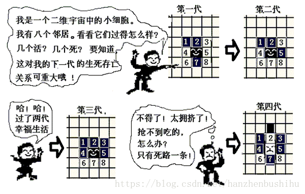
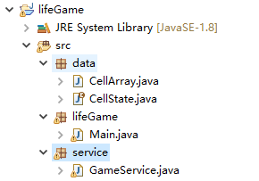
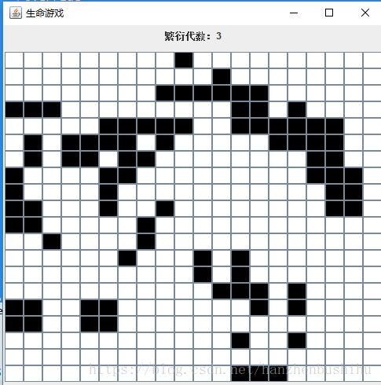
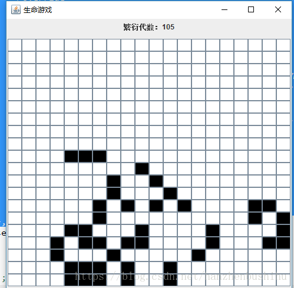

Java实现生命游戏
一、分析与思考
软件工程实验课第一节课让用java做了一个比较简单的程序-生命游戏
1. 游戏规则
生命游戏在初始化之后，按照以下规则不断演化繁殖：每个细胞的‘生’或‘死’由它8个邻居细胞的状态决定。

（1）“人口过少”：任何活细胞如果活邻居少于2个，则死亡。
（2）“正常”：任何活细胞如果活邻居为2个或3个，则继续活着。
（3）“人口过多”：任何活细胞如果活邻居大于3个，则死亡。
（4）“繁殖”：任何死细胞如果活邻居正好是3个，则活过来。
2. 分析
上述四步描述其实在算法中体现用三步描述即可
（1）如果活邻居等于3个，无论自己原来生死，都为活。
（2）如果活邻居等于2个且自己原来为生，则继续为生
（3） 其他，均为死。
二、代码实现
1. 简单分层
因为这个小程序要体现软件工程的分层结构，因此，先根据思路，我把结构分为data层，service层，和应用层

data层存放细胞数组类，service层存放算法逻辑，lifeGame应用层主要是界面的实现和启动
2.核心代码
1. 细胞生死即细胞矩阵的变化
1 | public static CellArray generate(CellArray cells) { |
2. 定时器
定时器是用来每过一段时间就更新细胞矩阵1
2
3
4
5
6
7
8
9
10
11
12
13
14
15
16
17
18
19
20
21
22
23Timer timer = new Timer();
timer.schedule(new TimerTask() {
@Override
public void run() {
cells = GameService.generate(cells);
++generation;
label2.setText("繁衍代数：" + generation);
for (int i = 0; i < row; i++) {
for (int j = 0; j < col; j++) {
if (cells.getCell(i, j) == CellState.LIVE.getValue()) {
btns[i][j].setBackground(Color.black);
} else {
btns[i][j].setBackground(Color.white);
}
}
}
}
}, 0, 500);
三、实现效果


###四、源码
https://download.csdn.net/download/hanzhenbushihu/10662798